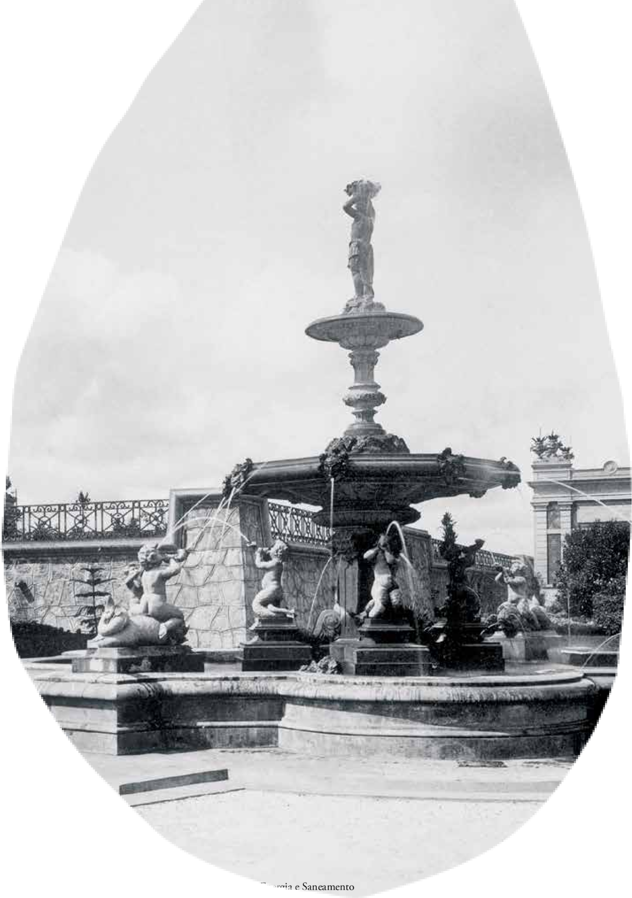
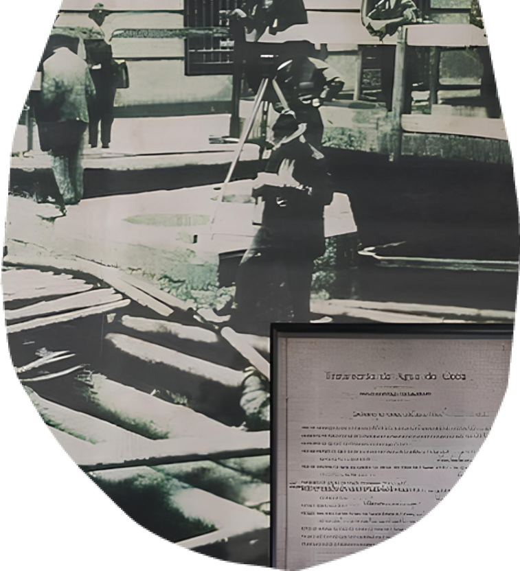

<div class="voc-sabia-polo-mooca">
    <div class="div">
      <div class="overlap">
        <div class="overlap-group">
          <div class="group">
            <div class="overlap-group-2">
              <div class="voc">VOCÊ</div>
              <div class="sabia">SABIA?</div>
            </div>
          </div>
          <div class="paragrafo-com-scroll">
            <p class="a-atual-identidade">
              A OC foi berço do saneamento em São Paulo se iniciando com a criação em 1877 da “Companhia Cantareira de Água e Esgoto”, 
              que mais tarde integraria a Sabesp, 
              e a construção do reservatório da Consolação em 1878.
            </p>
          </div>
          
        </div>
        <div class="overlap-2">
           
        </div>
      </div>
      <div class="vector-wrapper"></div>
      
      
      
      <div class="img-wrapper"></div>
    </div>
</div>
